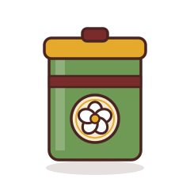
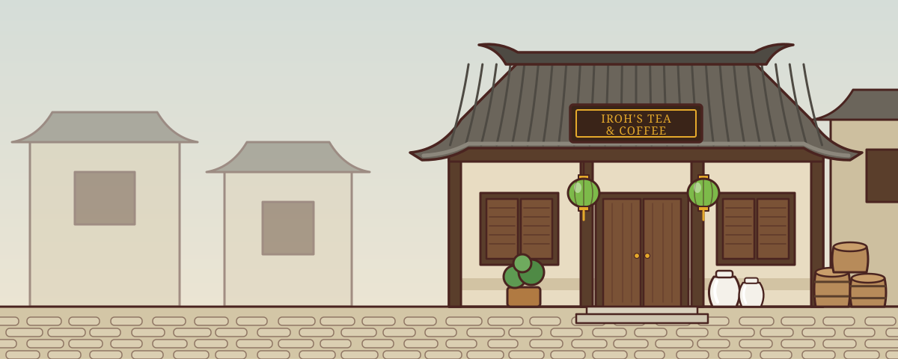

Jasmine Dragon
Green tea scented with fresh jasmine blossoms. Light, floral and calming.
$24 per tinLoose leaf tea by the tin, drinks brewed to order, and pastries from the morning bake. Chat with Uncle Iroh any time to order ahead.
See the menuFind us

Uncle Iroh opened the shop to share the teas he loves with his neighbors. Every tin is blended in small batches and sealed by hand, the drinks are brewed one cup at a time, and the pastries come out of the oven every morning.
Orders can be placed by phone or chat and picked up at the counter.
"There is no hurry. Good tea, like good advice, is worth the wait."
Come sit with a pot of tea, or order ahead and pick up at the counter.
212 Lotus Lane, in the Lower Ring market
Tuesday to Sunday, 9 a.m. to 7 p.m.
Twelve seats inside, a window bench, and a garden table out back.
Drinks and pastries are ready in about ten minutes. Tins are ready the same day.